News
Coral team members Nico Rivas, Valentina Bautista, and Hannah-Marie Lamle presented on their graduate studies at the Reef Futures Conference, accompanied by Dr. Santos. Nico had a 5 minute lightning talk presentation, while Valentina and Hannah-Marie got to discuss their research in the poster session. This conference was a great experience for our team to discuss our research to a wider audience of managers and restoration practitioners. The team spent down time networking and catching up with old friends, as well as make new ones. This conference provided hope and encouragement for us working in the often difficult field of coral restoration.
Funding for this conference was acquired by the Puerto Rico SeaGrant program, FIU CREST Center for Aquatic Chemistry and Environment, and the FIU Graduate & Professional Student Committee. We are very grateful for the awards provided from these organizations to be able to travel and attend the conference.
- Nico Rivas: "Will weedy coral species take over Caribbean reefs? Population dynamics of Porites astreoides under different environmental conditions
- Valentina Bautista: "Assessing Functional Trait Dynamics of Caribbean Scleractinia Communities in Puerto Rico's Northeast Marine Corridor"
- Hannah-Marie Lamle: "Show me your colors: Using spectroscopy to quantify coral health"
 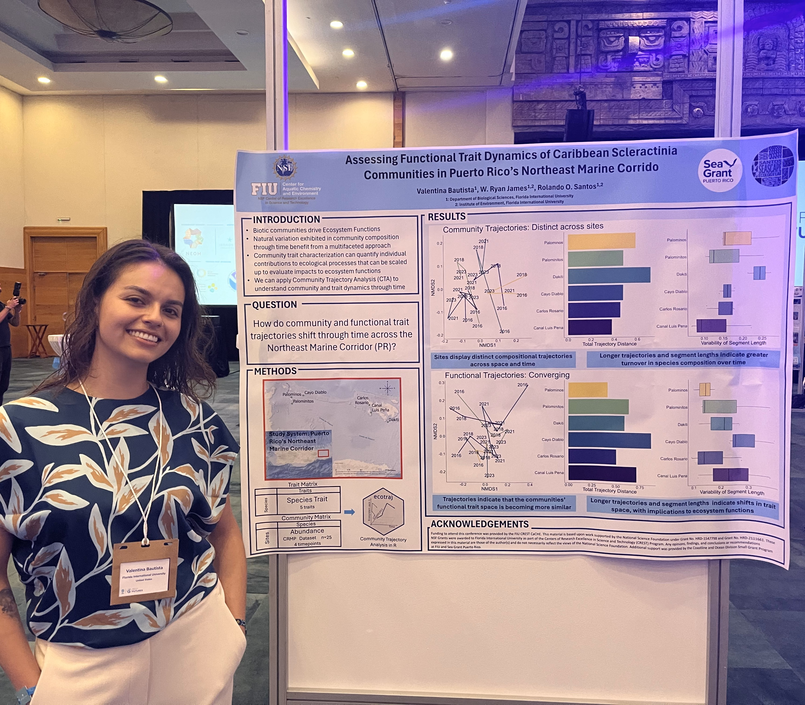
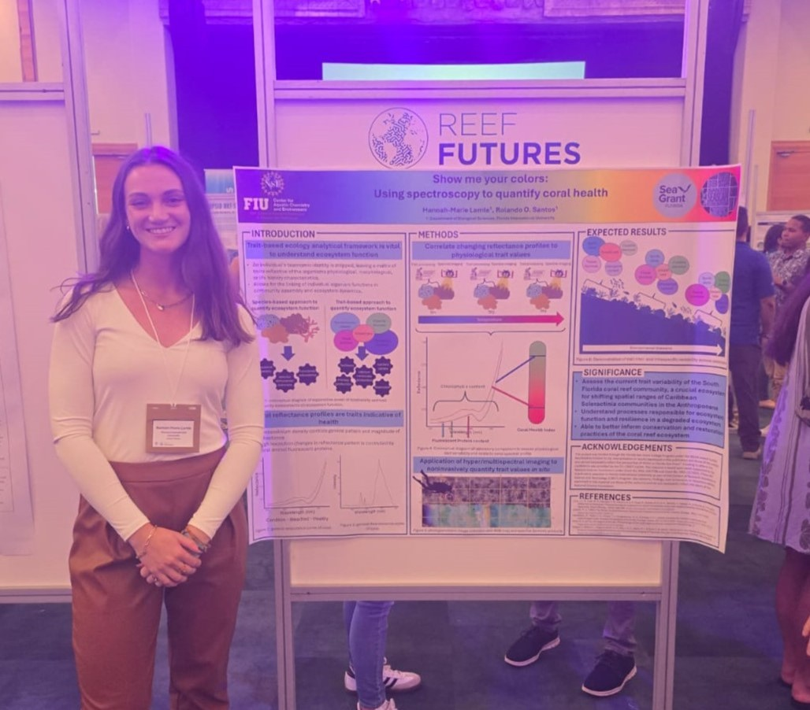
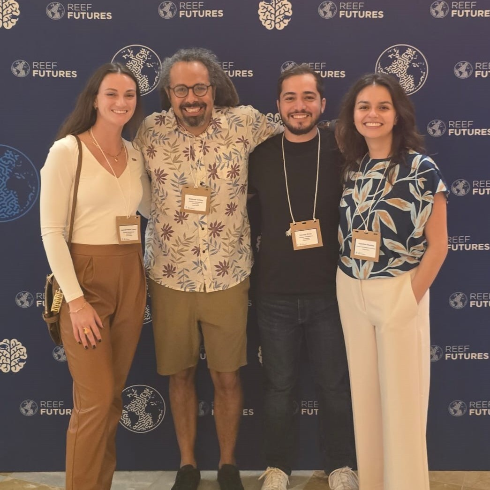
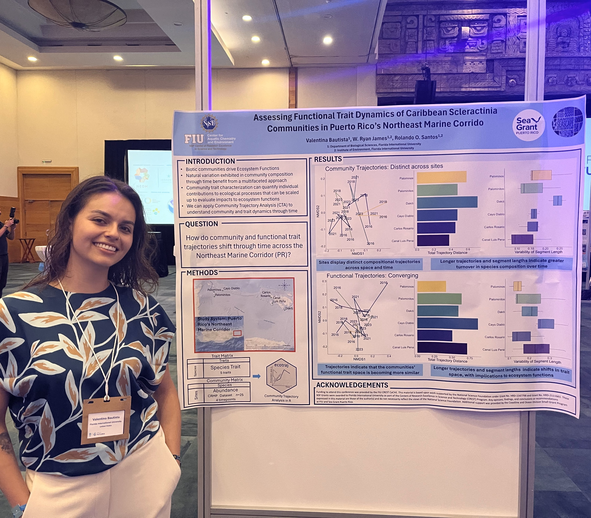
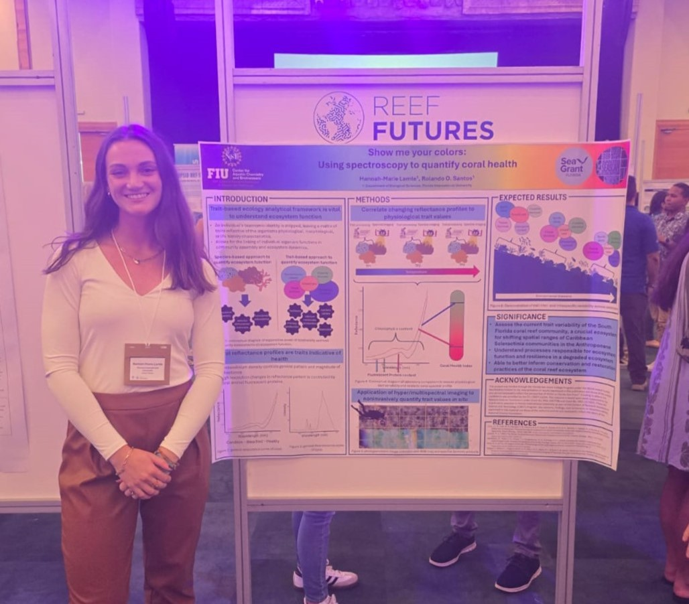
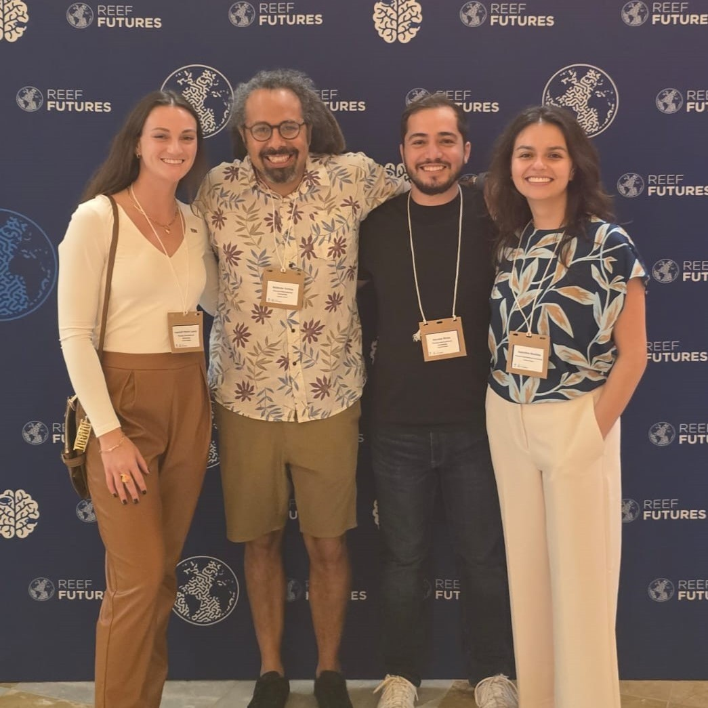
Gina Badlowski is on fire this semester with funding, recieving another $5000 from the Cristina Menendez Memorial Fellow Fellowship to support her dissertation work! This fellowship is awarded to FIU graduate students conducting research in the everglades. Gina's proposal for this award was "Exploring Pink Shrimp Contributions to Trophic Networks in the Greater Everglades." Congratulations again Gina, for this well deserved award!
The Santos Seascpae Ecology Lab has another graduate student alumni!! Congratulations to Valentina Bautista for passing her masters thesis defense, titled "Using a trait approach to assess the temporal stability of coral ecosystem function across the Puerto Rican archipelago." Valentina will be working in the coming months to submit chapters of her Masters thesis to scientific journals, as well as data collected that wasn't involved with her thesis. Valentina will be staying on as a research associate in the lab for the next months, assisting with other research projects and publishing her work.
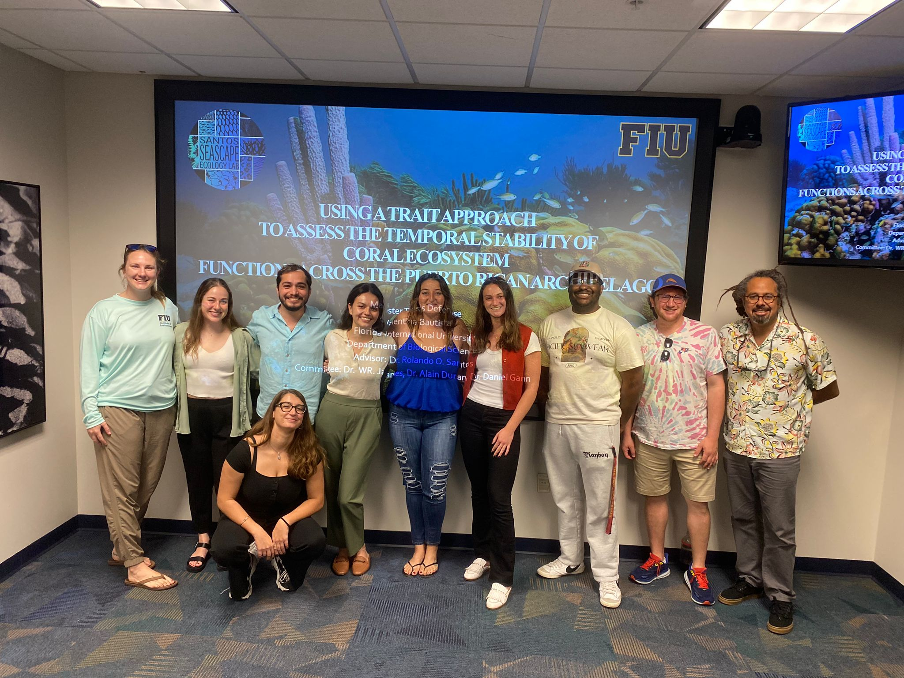Congraduations to Gina Badlowski, Ph.D. candidate in the lab, for being awarded $30,000 from the Everglades Foundation to support a chapter of her Ph.D. dissertation! Her proposal was titled "Exploring Pink Shrimp Contributions to Trophic Networks in the Greater Everglades." We are very excited to see the great work that Gina will accomplish with this fellowship. To see the official posting, please click here.
Hannah-Marie was awarded $25,000 in order to fund her research proposal, "Show me your colors: Using hyperspectral analysis to quantify coral health." This research will assist her dissertation work, as she conducts field studies via traditional red-green-blue as well as hyperspectral photogrammetric monitoring on Miami's reef tract and collects coral tissue for physiological trait processing. You can see the official posting on the SeaGrant website and learn more about Hannah-Marie's work here: Florida SeaGrant Announcement.
Our Seagrass-oriented lab members traveled across the pond to Napoli, Italy to present ongoing research at ISBW 2024! This conference was a great honor, we are happy to have such great representation from the SELab as well as our sister lab, the Coastal Fish Ecology & Fisheries Lab. We heard great talks from our lab members, including:
- Gina Badlowski: "Mesoconsumer trophic linkages across reef-seagrass seascapes within Sanctuary Preservation Areas in the Florida Keys"
- Marianna Coppola: "Addressing seagrass seascape multiscale responses to water quality in a subtropical estuarine lagoon"
- Dr. James: "Hypervolume modelling: a multivariate tool for seagrass ecosystem assessments"
- Dr. Rodemann: "Development of an upscaled submerged aquatic vegetation leaf cover model for long-term time series analysis in Florida Bay"
- Dr. Rehage: "Identifying critical thresholds and effects of land-based pollution from nutrients and pharmaceuticals on seagrass habitats and fauna"
Great job to all presenters, we are happy to have your representation at such a prestigious conference internationally!
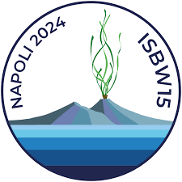In an effort to continue ground truthing for the FISHSCAPE project, Marianna Coppola partnered with the International Seakeepers Society to be matched with yacht owners wanting to help scientists get out in the field. She completed valuable work for her remote sensing project affiliated with FISHSCAPE, many thanks to the Captain and crew aboard the DISCOVER Yacht Amelia Dawn II!
Please help us in congratulating Gina on her wonderful accomplishment of winning the FCE LTER all scientists meeting "Best Student Poster" award! We are proud of her dedication to her work and showcasing her research at the conference.
The 2024 Benthic Ecology Meeting sponsored Valentina Bautista and Nico Rivas for their talks, including lodging and a transportation stipend. We are honored that two of our lab's members were selected for this award.
A congratulations are in order for Nico Rivas, who successfully defended his project proposal, titled "Assessing the Dynamic State of Caribbean Coral Reefs: The Influence of Seascape Properties, Macroalgae and Herbivory on Coral Population Growth and Community Assembly." Now, Nico is a PhD candidate and will spend the rest of his graduate career focused on analyzing data and writing his dissertation. Well done, Nico, for a great defense and passing this grad school milestone! 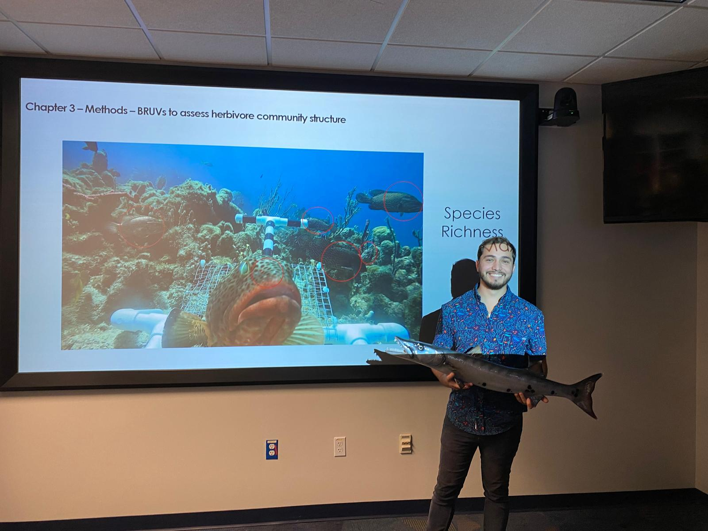
Team Seascape took over team FISHSCAPE for an outreach event at Citrus Grove K-8 two weeks ago! Lab members Hannah-Marie, Gina, and Nico spent a night teaching k-8 students and parents about some of the science the lab (and collaborators) do for an ongoing project down in the Florida Keys: Fish In Seagrass Habitats: Seascape Connectivity Across Protected Areas
Students had a blast learning how to measure a Great Barracuda, one of the main study species! Students also got to learn about stable isotopes: how to process samples using sweet tarts and fruit roll ups, drop their sample into an analyzer, and finally obtaining their results that determined their resource contributions! As a special bonus, they got to eat their sweet sample! What a blast it was to do educational outreach and we look forward to future events to share our science with others!
Graduate students Gina and Nico, in the SELab were awarded $1000 each towards their respective graduate research from the FIU Institute of Environment Coastlines and Oceans Division Research Award. This award will help them with purchasing the necessary supplies for laboratory processing and presentation of research at a scientific conference. Congratulations Nico and Gina!
The Santos Seascape Ecology Lab showed up in full force to CERF 2023 located in Portland, Oregon. The folowwing lab members gave presentations at the conference:
- Dr. Santos: "Influence of ecosystem state and habitat complexity on trophic dynamics"
- Dr. James: "Spatiotemporal patterns of seagrass seascape state and stability in South Florida"
- Gina Badlowski: "A multi-level approach to assessing nektonic biodiversity and community structure of seagrass seascapes"
- Marianna Coppola: "Mapping spatiotemporal changes in seagrass seascapes in South Florida"
Well done to all, and way to represent the SELab well!
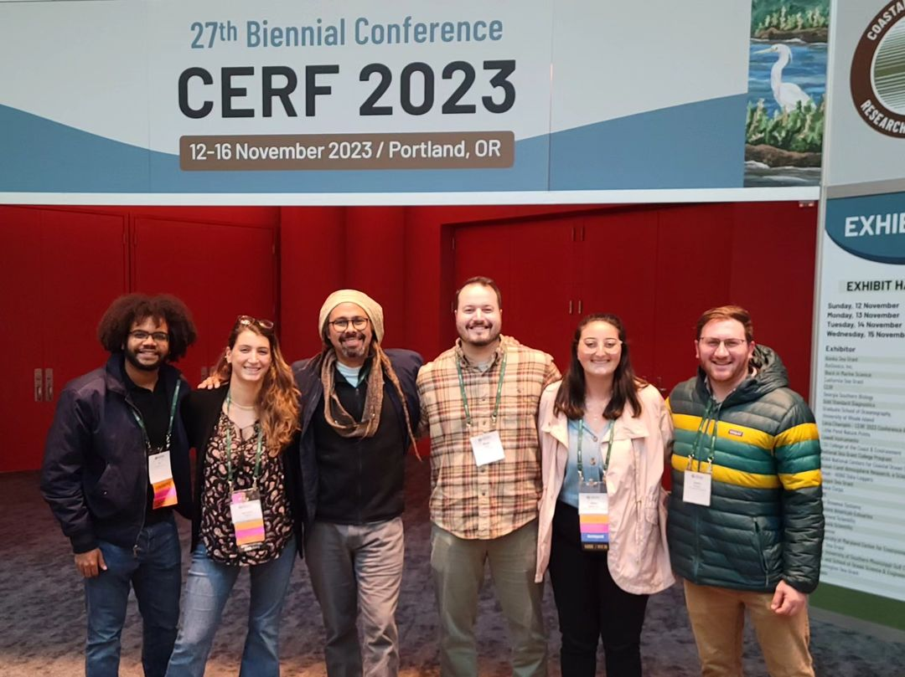The Santos Seascpae Ecology Lab has its first graduate student alumni!! Congratulations to Lauren Kabat for passing her masters thesis defense, titled "The Impact of Drought on Freshwater Shrimp Movement in Puerto Rican Headwater Streams." Lauren will be working in the coming months to submit chapters of her Masters thesis to scientific journals. We wish her all the best of luck in her future endeavours, and will miss her presence in the lab greatly!
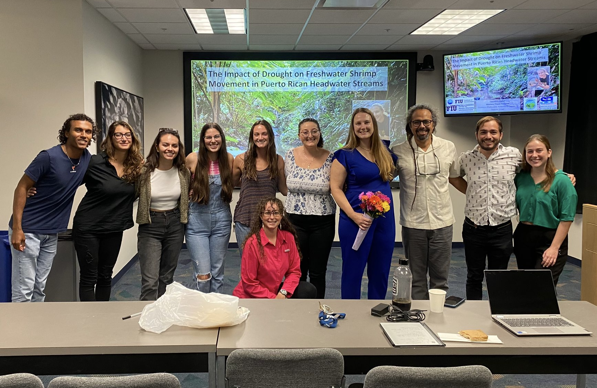